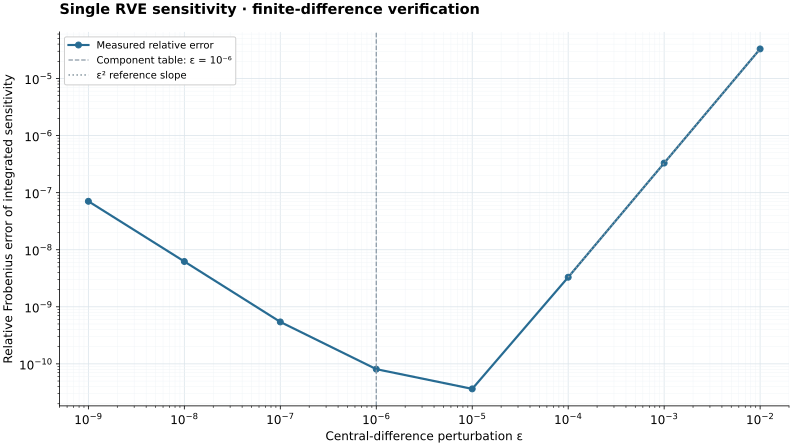

\[-\operatorname{Div}\mathbf P(\mathbf F_M+\nabla\mathbf w)=\mathbf0\quad\text{in }\Omega_\mu.\]
Single RVE / FEM
Periodic RVE with finite elements
Prescribe a macro deformation gradient, solve the periodic displacement fluctuation, and homogenize the first Piola stress.
\[\mathbf u^+-\mathbf u^-=(\mathbf F_M-\mathbf I)(\mathbf X^+-\mathbf X^-),\qquad \mathbf w^+=\mathbf w^-.\]
Periodic node pairs and the rigid-motion anchor are built from the boundary groups in input/ProblemMesh.txt.
\[G_\mu=\int_{\Omega_\mu}\mathbf P:\nabla\delta\mathbf u\,dV+\boldsymbol\lambda^T(\mathbf C\mathbf u-\mathbf g(\mathbf F_M)).\]
| Mathematical quantity | Meaning | Code identifier | Source function |
|---|---|---|---|
| \(\mathbf F\) | Micro deformation gradient | F | weak_scalar_hyperelastic_solid |
| \(\mathbf C\) | PBC constraint matrix | pbc | build_rve_periodic_constraints |
| \(\boldsymbol\lambda\) | PBC multipliers | lambda | solve_rve_periodic_problem |
| \(\bar{\mathbf P}\) | Homogenized stress | volume_average | compute_rve_constitutive_multiscale_response |
Build and run
cp -R RVEtest/input RVEtest/input.bak
cp Web/examples/single-rve-fem/input/*.txt RVEtest/input/
make -C RVEtest MODEL_SRC=../Web/examples/single-rve-fem/weak_form.cpp runDownloads
FEM RVE snapshot
Sensitivity verification / FEM
Finite-difference agreement across perturbation sizes.
Measured on this downloadable elastic RVE at \(\bar{\mathbf F}=\begin{bmatrix}1.015&0.02\\0.005&1.01\end{bmatrix}\). Each of the 64 perturbed problems is solved independently, plus one base solve. UMFPACK is used with RVE tolerance \(10^{-12}\); adaptive micro substepping is off.
Re-equilibrate the RVE at every perturbation.
\[\mathbf I_P(\bar{\mathbf F})=\int_{\Omega_\mu^0}\mathbf P_\mu\,dV,\qquad C_{iAjB}=\frac{d I_{P,iA}}{d\bar F_{jB}}.\]
\[C^{\mathrm{FD}}_{iAjB}(\varepsilon)=\frac{I_{P,iA}(\bar{\mathbf F}+\varepsilon\mathbf E^{jB})-I_{P,iA}(\bar{\mathbf F}-\varepsilon\mathbf E^{jB})}{2\varepsilon},\qquad e_{\mathrm{rel}}=\frac{\|\mathbf C-\mathbf C^{\mathrm{FD}}\|_F}{\|\mathbf C^{\mathrm{FD}}\|_F}.\]
Both sides use the integrated Piola convention of result.sensitivity.C. All 9 stress entries and 4 in-plane deformation-gradient directions enter the error norm. Dividing both sensitivities by the same fixed reference volume gives the averaged-stress tangent comparison.

Component comparison
In-plane components at \(\varepsilon=10^{-6}\).
Each row compares the implemented integrated sensitivity with the independently re-equilibrated central difference. Absolute errors remain meaningful for zero and near-zero components.
| Stress | Perturbation | Sensitivity | Central difference | Absolute error |
|---|---|---|---|---|
| P11 | F11 | 1.84890158515e+02 | 1.84890158501e+02 | 1.410e-08 |
| P11 | F12 | 3.44554673876e-01 | 3.44554679677e-01 | 5.801e-09 |
| P11 | F21 | -1.21905081861e+00 | -1.21905081607e+00 | 2.539e-09 |
| P11 | F22 | 6.39052925313e+01 | 6.39052925249e+01 | 6.432e-09 |
| P12 | F11 | 3.44554673875e-01 | 3.44554673126e-01 | 7.491e-10 |
| P12 | F12 | 5.17009004504e+01 | 5.17009004501e+01 | 2.894e-10 |
| P12 | F21 | 4.86282780332e+01 | 4.86282780333e+01 | 7.891e-11 |
| P12 | F22 | 7.64651934940e-01 | 7.64651934881e-01 | 5.877e-11 |
| P21 | F11 | -1.21905081861e+00 | -1.21905081962e+00 | 1.013e-09 |
| P21 | F12 | 4.86282780332e+01 | 4.86282780331e+01 | 1.430e-10 |
| P21 | F21 | 5.18079519064e+01 | 5.18079519067e+01 | 3.826e-10 |
| P21 | F22 | -1.32811547750e+00 | -1.32811547748e+00 | 1.392e-11 |
| P22 | F11 | 6.39052925313e+01 | 6.39052925269e+01 | 4.434e-09 |
| P22 | F12 | 7.64651934940e-01 | 7.64651935103e-01 | 1.633e-10 |
| P22 | F21 | -1.32811547750e+00 | -1.32811547582e+00 | 1.679e-09 |
| P22 | F22 | 1.85846546565e+02 | 1.85846546549e+02 | 1.579e-08 |
Additional plane-strain stress components (20 entries)
| Stress | Perturbation | Sensitivity | Central difference | Absolute error |
|---|---|---|---|---|
| P13 | F11 | 0.00000000000e+00 | 0.00000000000e+00 | 0.000e+00 |
| P13 | F12 | 0.00000000000e+00 | 0.00000000000e+00 | 0.000e+00 |
| P13 | F21 | 0.00000000000e+00 | 0.00000000000e+00 | 0.000e+00 |
| P13 | F22 | 0.00000000000e+00 | 0.00000000000e+00 | 0.000e+00 |
| P23 | F11 | 0.00000000000e+00 | 0.00000000000e+00 | 0.000e+00 |
| P23 | F12 | 0.00000000000e+00 | 0.00000000000e+00 | 0.000e+00 |
| P23 | F21 | 0.00000000000e+00 | 0.00000000000e+00 | 0.000e+00 |
| P23 | F22 | 0.00000000000e+00 | 0.00000000000e+00 | 0.000e+00 |
| P31 | F11 | 0.00000000000e+00 | 0.00000000000e+00 | 0.000e+00 |
| P31 | F12 | 0.00000000000e+00 | 0.00000000000e+00 | 0.000e+00 |
| P31 | F21 | 0.00000000000e+00 | 0.00000000000e+00 | 0.000e+00 |
| P31 | F22 | 0.00000000000e+00 | 0.00000000000e+00 | 0.000e+00 |
| P32 | F11 | 0.00000000000e+00 | 0.00000000000e+00 | 0.000e+00 |
| P32 | F12 | 0.00000000000e+00 | 0.00000000000e+00 | 0.000e+00 |
| P32 | F21 | 0.00000000000e+00 | 0.00000000000e+00 | 0.000e+00 |
| P32 | F22 | 0.00000000000e+00 | 0.00000000000e+00 | 0.000e+00 |
| P33 | F11 | 7.64245701280e+01 | 7.64245701220e+01 | 5.991e-09 |
| P33 | F12 | 4.86691887029e-01 | 4.86691887902e-01 | 8.729e-10 |
| P33 | F21 | -6.50033931143e-01 | -6.50033931460e-01 | 3.166e-10 |
| P33 | F22 | 7.66733048325e+01 | 7.66733048252e+01 | 7.296e-09 |
Full measurement record (JSON) · All components and perturbations (CSV) · Graph (SVG) · Graph (PNG)


The measured discrepancies are finite numerical errors. This check verifies the homogenized integrated-stress tangent at the stated deformation; it does not measure spatial-discretization error or independently test each intermediate sensitivity.